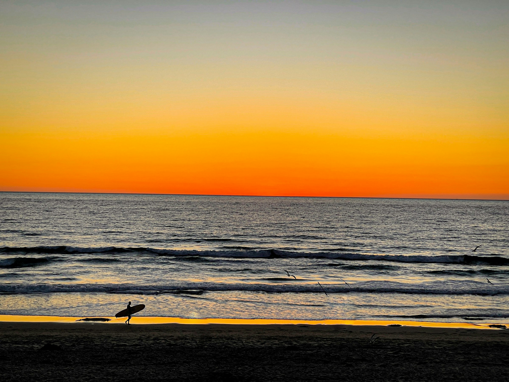
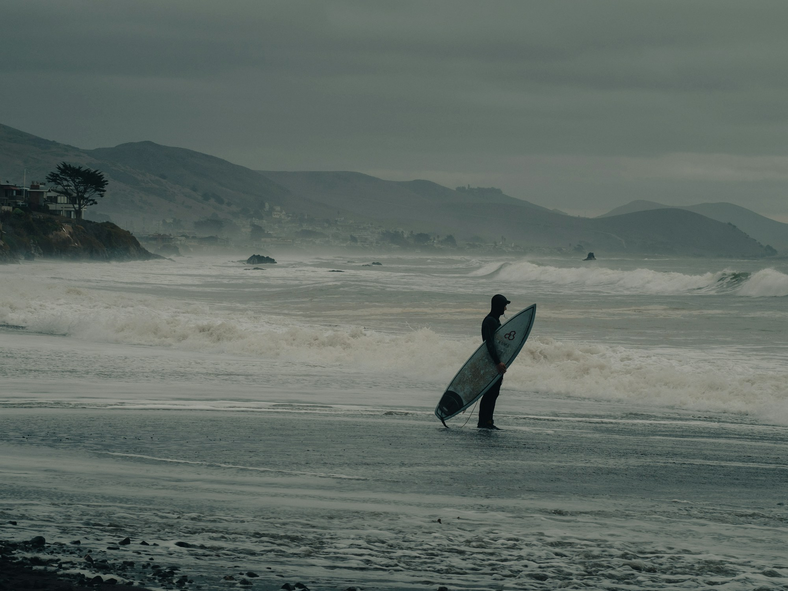
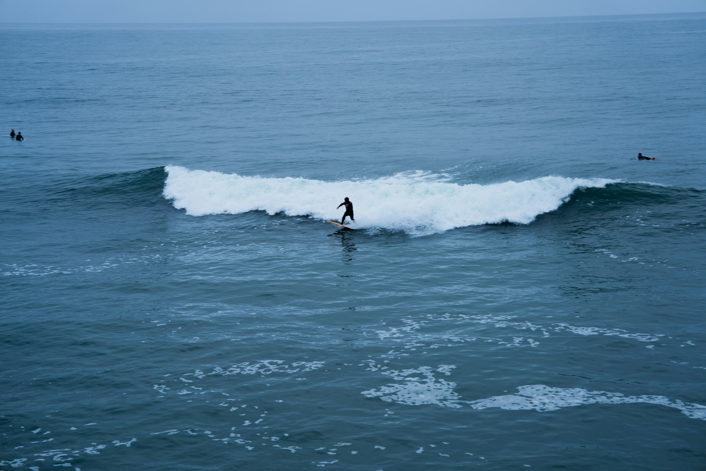

California · Corduroy · Local
파도 밖에서도,
우리는 로컬이다.
서핑이 끝난 뒤에도 이어지는 하루를 위해.
Katin은 매일 입는 코듀로이 반바지를 만듭니다.
Scroll to local days
CORDUROY FOR LOCAL DAYS●MADE FOR SLOW MOMENTS●CALIFORNIA STATE OF MIND●●●
01About Katin
1954년,
파도에서 시작된
캘리포니아.
Katin은 1954년 캘리포니아에서 시작했습니다. 전설적인 서퍼 코키 캐롤과 함께 성장하며 바다의 자유를 일상의 옷으로 옮겨왔습니다.
거친 파도를 견디는 튼튼한 원단과 견고한 바느질. 화려함보다 오래 남는 옷이 Katin이 지켜온 방식입니다.
우리가 만드는 기준- Born
- California, 1954
- Heritage
- Corky Carroll
- Standard
- Built to Last

From water to street
파도를 버티는 옷은,
거리에서도
오래 남습니다.
“캘리포니아 서퍼의 자유를
튼튼한 원단과 바느질에 담습니다.”
바다에서 시작한 기능은 도시의 일상으로 이어집니다. 편안하지만 쉽게 흐트러지지 않는 옷, 오래 입을수록 더 자연스러운 옷을 만듭니다.
02Product Story
파도 위에서,
거리까지.
코듀로이 로컬 반바지는 바다와 도시 사이를 나누지 않습니다. 움직임이 편안한 실루엣과 오래 입을 수 있는 소재를 한 벌에 담습니다.
결의 방향에 따라 달라지는 색감과 클래식한 인상은 시간이 지날수록 입는 사람의 일상에 가까워집니다.
NINE COLORS · AVAILABLE NOW
- 01Durable fabric
- 02Solid stitching
- 03Everyday freedom
대표 제품을 불러오는 중입니다.
03Our Standard
보이지 않아도,
기준은 같습니다.
- 01Texture
손끝에 분명하게 남는 8골 코듀로이
- 02Movement
걷고, 타고, 앉는 일상을 위한 여유
- 03Finish
안쪽 봉제까지 같은 기준으로 마감
04Local Journal
파도와 사람,
로컬의 기록.
만드는 과정과 우리가 사랑하는 장소를 기록합니다.
